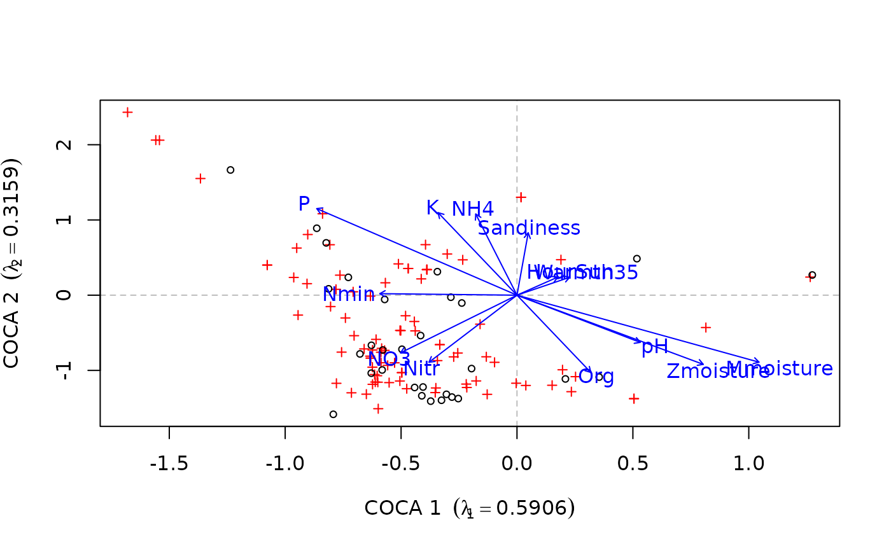

envfit.coca.RdThe function fits environmental vectors or factors to a Co-CA ordination. The projections of points onto vectors have maximum correlation with corresponding environmental variables, and the factors show the averages of factor levels.
# S3 method for coca envfit(ord, env, which = c("response", "predictor"), choices = c(1, 2), scaling = FALSE, w, na.rm = FALSE, strata = NULL, permutations = 999, ...)
| ord | a Co-CA ordination object, the result of a call to
|
|---|---|
| env | a data frame, matrix or vector of environmental/external variable(s) to be fitted to the ordination. The variables may be of a mixed type (factors and continuous variables) in a data frame. |
| which | character; which of the response or predictor ordinations should be used during fitting of vectors and factors. |
| choices | numeric; the axes to which vectors and factors are fitted. |
| scaling | logical; should sacling be applied. See
|
| w | weights used in fitting vectors and factors. |
| na.rm | Remove points with missing values in ordination scores or
environmental variables. The operation is casewise; the whole row of
data is removed if there is a missing value and |
| strata | An integer vector or factor specifying the strata for permutation. If supplied, observations are permuted only within the specified strata. |
| permutations | Number of permutations for assessing significance
of vectors or factors. Set to |
| ... | Arguments passed to |
See envfit for details of the method.
Returns an object of class envfit.
coca for fitting models. envfit for
details of the generic function and the computations performed.
## symmetric CoCA data(beetles) data(plants) ## log transform the bettle data beetles <- log(beetles + 1) ## fit the model bp.sym <- coca(beetles ~ ., data = plants, method = "symmetric")#> #>## load the environmental data data(verges) ## fit vectors for the environmental data sol <- envfit(bp.sym, verges, which = "response") sol#> #> ***VECTORS #> #> COCA 1 COCA 2 r2 Pr(>r) #> Mmoisture 0.76095 -0.64881 0.4686 0.036 * #> Zmoisture 0.65812 -0.75292 0.3711 0.076 . #> Org 0.29636 -0.95508 0.2873 0.162 #> Sandiness 0.05840 0.99829 0.1718 0.422 #> pH 0.64658 -0.76284 0.1683 0.490 #> NO3 -0.54818 -0.83636 0.2088 0.294 #> NH4 -0.16274 0.98667 0.2975 0.181 #> Nmin -0.99942 0.03412 0.0872 0.678 #> P -0.60030 0.79978 0.5153 0.034 * #> K -0.29634 0.95508 0.3284 0.114 #> Nitr -0.39179 -0.92005 0.2336 0.274 #> HourSun 0.59022 0.80724 0.0220 0.878 #> Warmth35 0.69088 0.72297 0.0269 0.833 #> --- #> Signif. codes: 0 ‘***’ 0.001 ‘**’ 0.01 ‘*’ 0.05 ‘.’ 0.1 ‘ ’ 1 #> Permutation: free #> Number of permutations: 999 #> #>plot(sol)